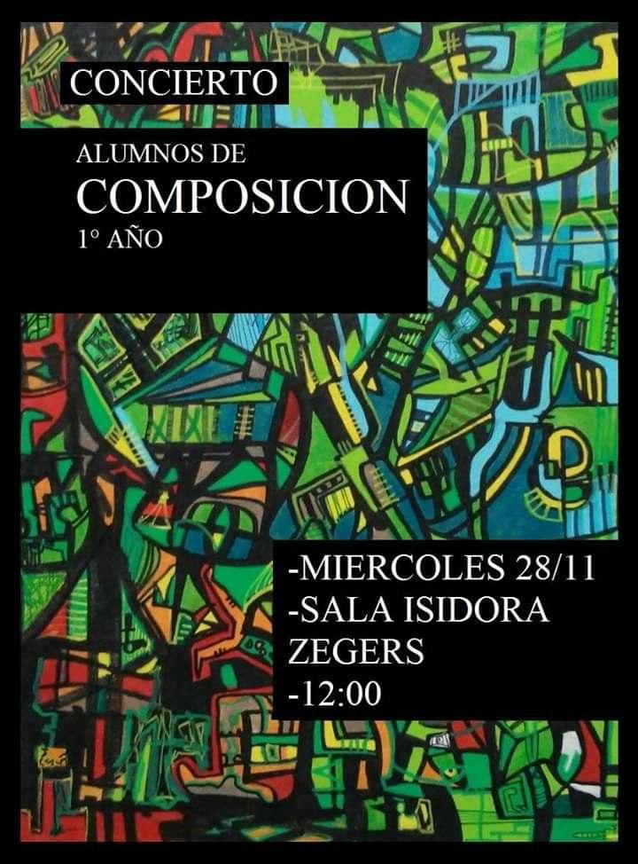
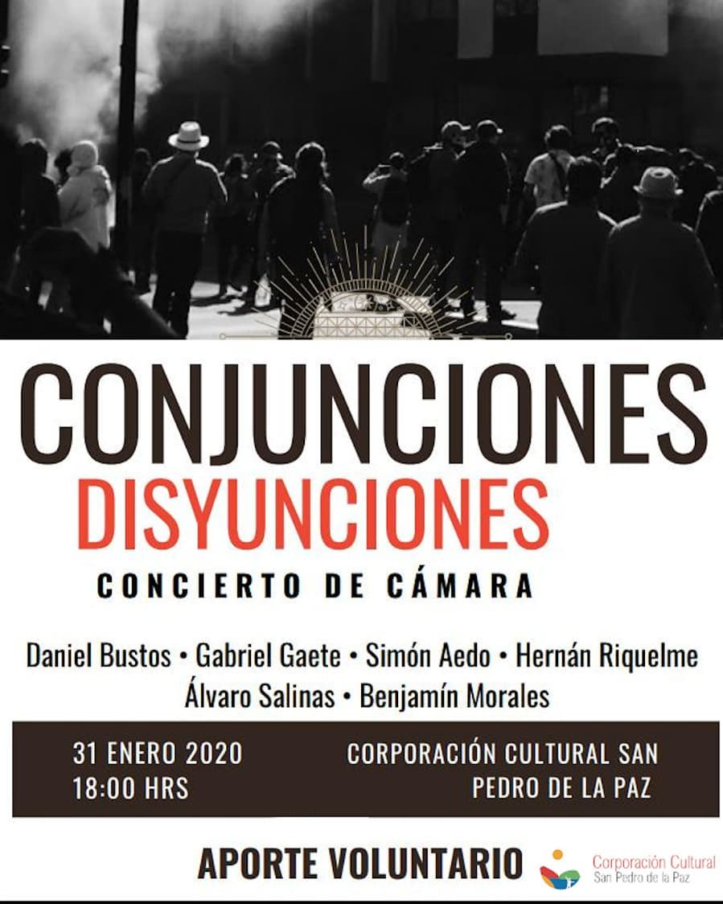

Conciertos

Youtube
Concierto de estudiantes de primer año de composición (2018).
 No existen registros audiovisuales de este concierto.
Concierto de estdiantes de segundo año de composición (2019).
No existen registros audiovisuales de este concierto.
Concierto de estdiantes de segundo año de composición (2019).

Youtube
Conjunciones, Disyunciones. San Pedro de la Paz, Concepción. (2020)